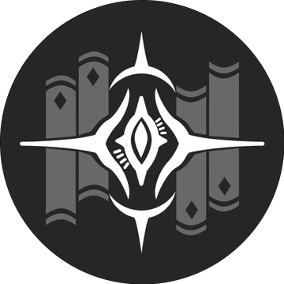

Descripcion del personaje
Jing Yuan es un personaje importante en Honkai: Star Rail, uno de los Seis Lores Generales de la Xianzhou Luofu, una de las flotas interestelares de la Alianza Xianzhou. Como uno de los líderes militares más poderosos, Jing Yuan es responsable de la protección de su flota y del mantenimiento del orden en su territorio.
Jing Yuan es conocido por su sabiduría y su carácter calmado, a menudo representado como un estratega sereno pero letal. A pesar de su actitud tranquila, es extremadamente formidable en combate. Tiene una personalidad relajada y a menudo parece despreocupado, incluso inclinándose hacia la pereza en momentos de descanso, pero su mente es siempre aguda y atenta, capaz de anticipar movimientos enemigos con gran precisión.
Introduccion al personaje
Jing Yuan es un personaje de tipo Eléctrico y pertenece a la Vía de la Erudición. Es un DPS (personaje de daño) fuerte que invoca a un León del Rayo, conocido como el Divino Fulgor, que lo ayuda a infligir grandes cantidades de daño a múltiples enemigos en las batallas, convirtiéndolo en una pieza clave para equipos que necesiten daño masivo y control en áreas grandes.
Su carácter equilibrado entre sabiduría y poder, junto con su fuerte liderazgo militar, lo hace respetado y temido tanto por sus aliados como por sus enemigos.
Calidad del personaje

VIA del personaje
Erudicion

Estadisticas del personaje
- PV: 1164
- ATQ: 698
- DEF: 485
- VEL: 99
- Provocacion: 75